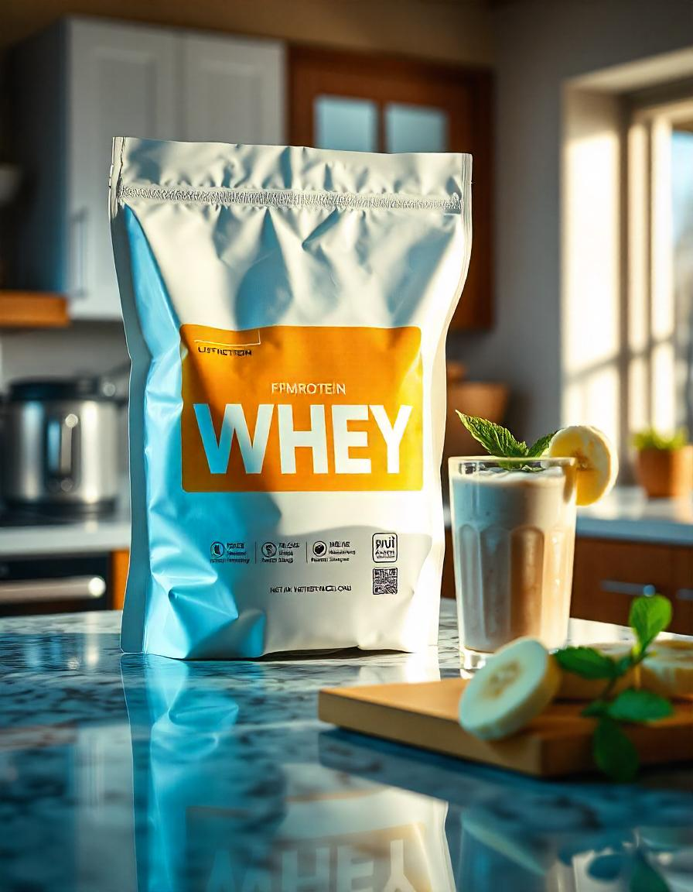

O whey isolado é um suplemento proteico derivado do soro do leite, altamente recomendado para quem busca
maior concentração de proteínas, com baixo teor de carboidratos e gorduras.
Benefícios do Whey Isolado:
- Alta concentração de proteínas (normalmente acima de 90%) ideal para ganho de massa muscular.
- Baixo teor de lactose: indicado para pessoas com intolerância à lactose.
- Rápida absorção, fornecendo aminoácidos para recuperação muscular.
- Auxílio no emagrecimento e controle de apetite.
Onde Encontrar o Whey Protein Isolado
O Whey Protein Isolado pode ser encontrado em diversas lojas especializadas em suplementos alimentares,
como:
- Loja X - Rua das Suplementos, 123
- Farmácia Y - Avenida da Saúde, 456
- Online: Sites como Mercado Livre, Amazon, e lojas especializadas em nutrição esportiva
Como Tomar o Whey Protein Isolado
O Whey Protein Isolado deve ser consumido de acordo com suas necessidades nutricionais. A forma mais
comum de consumo é:
- 1 porção (normalmente 30g) misturada com água ou leite, após o treino, para recuperação muscular.
- Em jejum, pela manhã, para fornecer proteína ao organismo logo após o período de descanso.
Evite misturar com líquidos que possuam muito açúcar, como sucos industrializados, para não comprometer a
qualidade nutricional do suplemento.
Como é Produzido o Whey Protein Isolado
O Whey Protein Isolado é obtido através do processo de filtração do soro do leite. O processo de produção
envolve as seguintes etapas:
- Extração do soro do leite após a coagulação do leite durante a produção de queijos.
- Filtração para remover impurezas e concentrar as proteínas.
- Secagem do produto filtrado, gerando o pó de Whey Protein.
- Filtragem adicional para remover mais carboidratos e gorduras, resultando em uma concentração de
proteínas superior a 90%.
Esse processo garante que o produto final seja altamente concentrado e de fácil digestão.